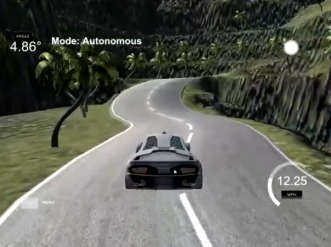

|
Nattarrud Charoennithi Undergraduate KMITL Bangkok, Thailand [GitHub] [Linkedin] [Resume/CV] [Transcript] [Thesis] [Poster] |
About Me
I am passionate with machine learning, computer vision, and deep learning. I always dream of helping projects with artificial intelligence to produce amazing results. I am improving my communication and presentation skills to better communicate with my colleague. I am looking forward to gain more knowledge and experience to come up with solutions to solve real world problems.
Skills
Technical Skills: Python, C, JavaScript, SQL, Git, ROS, GX Works 2, Docker, HTML, Pytorch, Ubuntu, Raspberry Pi, ArduinoNon Technical Skills: Project Management, Communication, Problem-solving, Decision-making
Design Skills: Autodesk Fusion 360, Adobe XD, SketchUp, Unity, Blender, LaTeX
Languages: Full Professional English (IELTS 7.0), Native Thai
Interests: Machine Learning, Deep Learning, Computer Vision, Internet of Things, Data Science
Highlights
1 / 5

Pills Classification
2 / 5

Behavioral Cloning
3 / 5

MeSave
4 / 5

Hand Activity Tracking
5 / 5

Rice Measuring System
Experience

|
I4.0 and Digitalization Engineer Robert Bosch Automotive Technologies Thailand Co., Ltd. / June 2022 - Present |
Certificate
|
|
Cloud Digital Leader Google Cloud | Issued Sep 2022 | [Certificate] |
|
Google Data Analytics Professional Certificate Coursera | Issued Jan 2022 | [Badge] [Certificate] |
Education

|
King Mongkut's Institute of Technology Ladkrabang Currently in 3rd year / Bachelor's Degree / Robotics and AI Engineering / Cumulative GPA: 3.67 / [Transcript] |
|
Assumption College Secondary Education / Science and Mathematics |
Projects

|
Pill Classification Created a pill classification model to help people identify its description without seeking a pharmacist. [Slideshow] [Video] |

|
Yarm bot Use Robot Operating System (ROS) and Raspberry Pi to control mobile robots remotely around the house and stream livefeed videos to the host computers and mobile phones. [Slideshow] [Video] |
|  |
Behavioral Cloning Implemented a deep learning model to create a self-driving car in a Unity simulator. [Report] [Video] |
|
MeSave Thitisart Thitathan, Kanyakorn Chomtiwang, Jiratchaya Fuengthanakul, Nattapat Charoenruangdet, Nattarrud Charoennithi. Built an energy monitoring system with artificial intelligence to help households save energy. [Slideshow] |
|

|
Rice Measuring System Detect, count, and measure the size of rice through image processing with python. [Video] [Github] |
|
|
Hand Activity Tracking Trained a CNN model to track hand activity to detect and reduce human errors while assembling product.. [Video] [Github] |

|
Traffic Detection with Optical Flow Detect moving cars with optical flow algorithm to calculate the velocity and direction of the car. [Slideshow] [Video] [Github] |